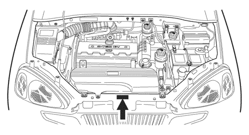

SECCIÓN 1
INTRODUCCIÓN GENERAL
1. EQUIPAMIENTO Y MATERIAL PARA LA PDI Y SERVICIO
Deben disponerse las siguientes herramientas y líquidos para el proceso de inspección de preentrega y su servicio.
HERRAMIENTAS
- Manómetro para neumáticos
- Inflador de neumáticos
- Maza de goma (para cubierta de rueda/tapa)
- Llave dinamométrica (para el par de tuercas de rueda)
- Llaves 8 mm - 21 mm
- Destornillador pequeño de cabeza plana
- Destornillador (+)
- Tenazas
- Cinta de casete (para la inspección de funcionamiento del reproductor)
- Aparato de verificación de faros
- Tacómetro con transmisor de impulsos
- Trapos de taller
LÍQUIDOS
- Líquido de frenos/embrague
- Aceite de motor
- Aceite de la transmisión manual
- Aceite de la transmisión automática
- Líquido de la dirección asistida
- Refrigerante del motor
- Líquido del lavaparabrisas
- Lubricante(s) en aerosol
2. FORMULARIO DE INSPECCIÓN DE PREENTREGA
- Debe preparar el formulario de inspección de preentrega recogido en las siguientes páginas, describiendo las funciones de inspección, comprobación, servicios relacionados y acciones correctivas.
- Antes de iniciar la inspección de preentrega, deberá completar íntegramente la columna superior de la primera página del formulario de PDI como se detalla a continuación.
- – El modelo, el número de identificación del vehículo y el código de color de la carrocería están grabados en la placa del número de identificación del vehículo (VIN) situada en la parte superior del travesaño, sobre el radiador.



- - El número del motor está grabado en el bloque motor, bajo el colector de escape nº 4 del motor.

- – Complete los demás espacios vacíos de la columna, como el número de artículo del concesionario, número de la orden de reparación, nombre del usuario, dirección, ciudad, estado, nombre del concesionario de entrega, código del concesionario y fecha, si fuera necesario.
- Inspeccione el vehículo y anote el resultado de la inspección en el formulario PDI en el orden siguiente conforme a los elementos detallados del formulario.
- – Compartimento del motor
- – Carrocería – accesorios
- – Bajos del vehículo
- – Prueba en carretera
- – Aspecto
- Debe comprobar y confirmar la columna del informe de entrega sólo después de haber corregido totalmente todos los defectos encontrados durante la inspección.